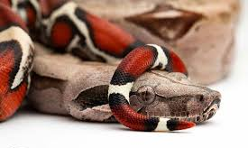
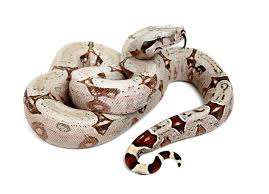

Boa Constrictor Constrictor

É uma jibóia muito popular principalmente nas localidades mais úmidas do brasil, como a amazônia. Sua principal característica é o desenho vermelho em sua cauda, algo que chama bastante atenção, além de sua coloração, em geral, mais escura que as outras espécies de Boa Constrictor. Pode alcançar até 3,5 metros uma fêmea e 2,5 metros um macho.
Boa Constrictor Amaralis

Uma espécie bem interessante com coloração mais amarelada e clara. Em geral, apesar de sua causa possuir o mesmo desenho que a Boa Constrictor Constrictor, sua coloração é diferente, ao invés de vermelha ela é mais voltada para o verde bem escuro ou preto. Pode alcançar em geral o mesmo tamanho e vive em localidades um pouco mais secas, como a caatinga.